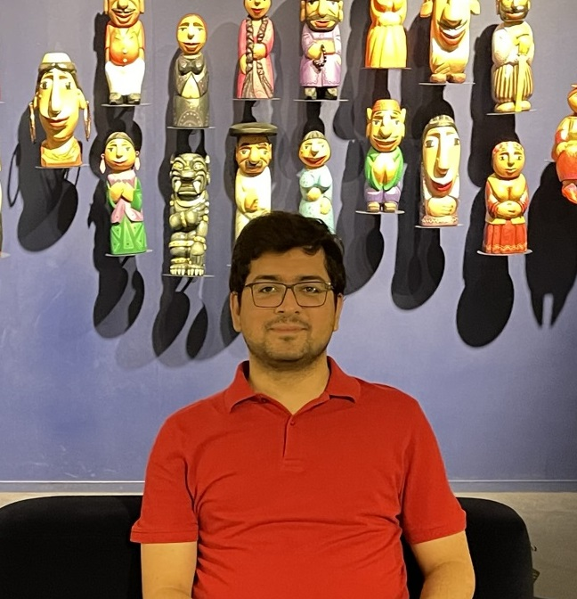

Muhammad Ali

Summary
Experienced IT professional with over 7 years in software development and automation testing across diverse industries. Proven leadership in CRM, Title insurance, e-commerce, and AI projects. Moreover, experience of building an automation testing department and automation suite.
Education
- Bachelor of Computer Science - Forman Christian College, Lahore - 2015
Work Experience
Sr Automation Engineer at Stewart Title
06/2021 - Present
- Write extensive integration test cases for Stewart Connect which is
the key product of the company, using Selenium Java on TestNG
framework. As an Automation Engineer I maintain the CICD pipeline
built on Azure DevOps and ensure execution of various test suites.
- My responsibilities also include writing API tests against code
written by approx 20 developers and ensuring smooth delivery of
releases.
- Develop and maintain Playwright tests using JavaScript.
- Oversee quality of code of other members of the team.
- Communicate with the project development teams to understand
and improve project requirements.
Software Engineer in Test at Afiniti
09/2020 - 06/2021
- Developed and maintained test cases using Afiniti's Testing tool
and Behave with Python.
- Built CICD Jenkins pipelines and ensured smooth test cases
execution.
- Led UI automation testing.
Senior Test Automation Engineer at Rolustech
08/2017 - 09/2020
- Built a team from scratch: from hiring to training and supervising
the team.
- Built automation suite using Candybean, Java Selenium and Robot
framework which was sold to multiple clients.
- Lead automation projects for key clients like Audi, Dakota, Credebt,
Zension, Lexcheck etc., on CRMs that include Salesforce, SugarCrm
and SuiteCrm.
- Built CI/CD pipelines on Jenkins, GitLab and Teamcity according to
the project requirement.
- Designed the recruitment tests for developers and conducted
interviews.
- Trained all newly recruited associate software engineers for the
company.
Skills
- Java
- JavaScript
- TypeScript
- Selenium
- Playwright